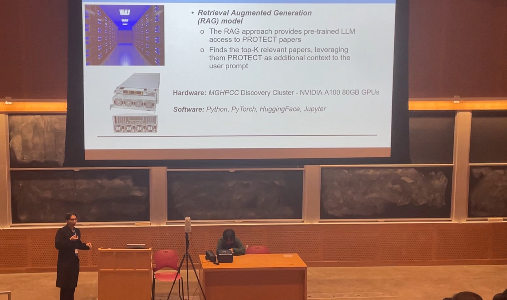

Projects

Sustainable AF
Full-stack web application for finding sustainable products and services with an interactive solar heat map and carbon footprint calculator.
Maritime
Mobile application for tracking live microplastic concentrations in the ocean with CNN-powered waste identification from camera input.
OracleNet
Global knowledge graph that takes hypothetical news headlines and visualizes all plausible cascading impacts on the economy, industries, supply chains, and geopolitics.
NSightful
Real-time 3D visualization tool for GPU utilization monitoring, built with Rust and Tauri for native performance.
Griddy
Smart grid power management and optimization system for real-time energy distribution and load balancing.
Currently Working On
Sparse Matrix Compiler for CUDA, accelerating SpMV and SpMM on NVIDIA GPUs
MaxText-backed rollout engine for Tunix, scalable LLM post-training on TPU
Relaxing and taking it easier